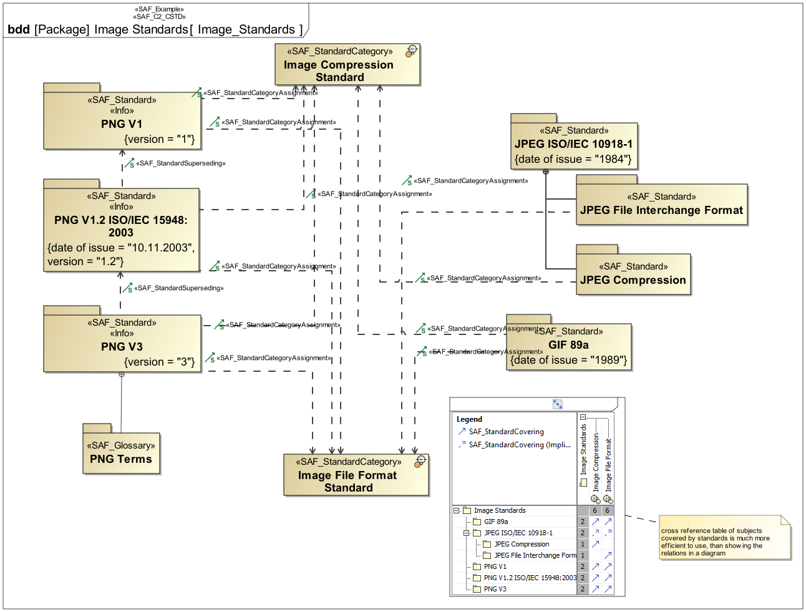
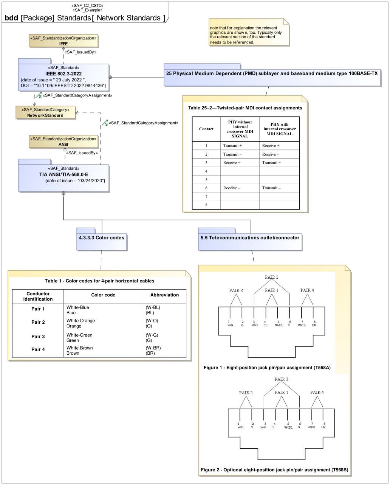
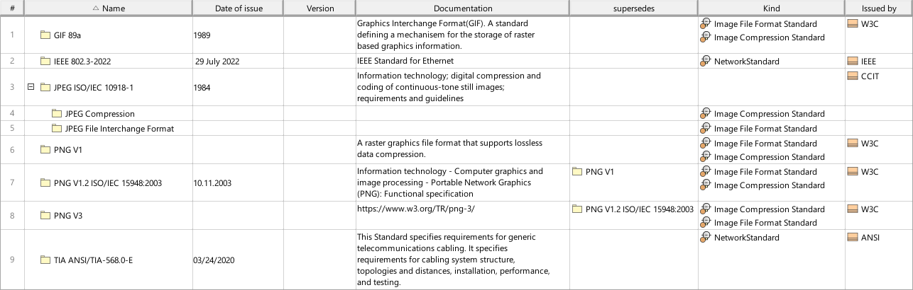

C2_CSTD Common Standards Definition Viewpoint
| Domain | Aspect | Maturity |
|---|---|---|
| Common | Taxonomy & Structure |



The Standards Definition Viewpoint supports the definition of applicable standards, e.g., for format and protocol specifications, regulations, and engineering documents that are used throughout the system life cycle. It provides the meta-data for the applied standards, guidance and policy, e.g., issue, version, issue date, and publisher. The Viewpoint helps to keep track of changes to the set of applicable documents and of new versions of applied standards. Links should be used to refer to documents external to the architecture description.
The Standards Definition Viewpoint supports the definition of standards, and assignment of model elements to standards, during the technical processes and according to the information management process of the INCOSE SYSTEMS ENGINEERING HANDBOOK 2023 .
A block definition diagram (BDD) featuring the taxonomy of types of standards, applicable to the system of interest, or parts of the system of interest. The Standards are represented by packages which allows to use them in model libraries and put e.g. reusable interface definitions, or terms complying to the standard into the package
A table format listing standards, applicable to the system of interest or parts of it, and the relation to which parts of the system the standards apply
The following Stereotypes / Model Elements are used in the Viewpoint: